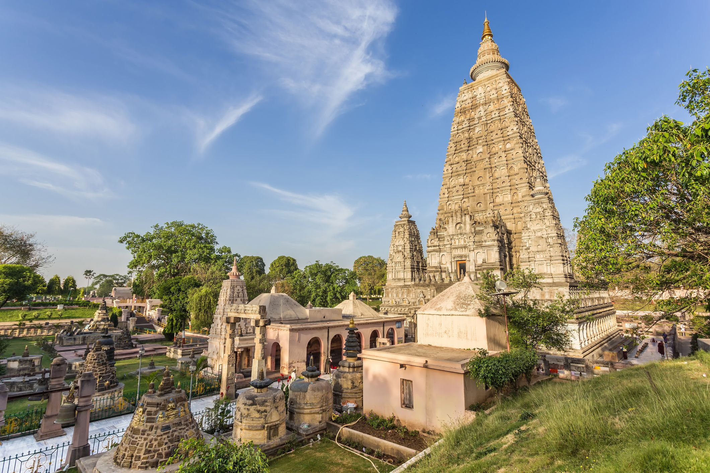

MAHABODHI TEMPLE
Mahabodhi Temple’s storied past traces back over two millennia, to the reign of Emperor Ashoka in the 3rd century BCE. Driven by his profound conversion to Buddhism, Ashoka embarked on a mission to disseminate the Buddha’s teachings across his empire. His pilgrimage to Bodh Gaya culminated in the construction of a stupa marking the spot of Buddha’s enlightenment. Over successive centuries, Bodh Gaya flourished as a center of Buddhist pilgrimage and learning, attracting devotees and scholars from far and wide. The present-day Mahabodhi Temple complex evolved through multiple phases of construction and renovation, with contributions from various ruling dynasties, including the Mauryas, Guptas, and Palas. Despite enduring periods of decline and desecration, Mahabodhi Temple’s resilience and spiritual significance endured, culminating in its designation as a UNESCO World Heritage Site in 2002. Today, it stands as a beacon of Buddhist faith and a testament to the enduring legacy of the Enlightened One.
META BUDDHARAM TEMPLE
The Metta Buddharam Temple in Bodh Gaya or the silver temple is a stunning piece of architecture built by the Thais. A huge white statue of Buddha adorns the silver pagoda at the the back. It’s a little way off the main road but if you visit Bodh gaya don’t miss it.
VISHNUPAD TEMPLE

The construction date of temple is unknown and it is believed that Rama along with Sita had visited this place. The present day structure was rebuilt by Devi Ahilya Bai Holkar, the ruler of Indore, in 1787, on the banks of the Falgu river.[8] Ahilyabai Holkar had crafted the temple, sent her officers to inspect and find the best stone for the temple in whole region, and they finally found munger black stone as the best choice in Jaynagar. Since there was no proper road and the mountains were very far from Gaya, the officers found another mountain where they can carve and easily bring the stone to Gaya the place was near Bathani (a small village in Gaya district). The officers brought the craftsmen from Rajasthan. They started carving the temple in Patharkatti (a village and also a tourist place in Bihar). The final temple was assembled in Gaya near Vishnupad temple site. After the completing the construction of temple many craftsmen returned to their native places, but some of them settled-down in Pattharkatti village itself. Bihar government has marked this place as one of the prominent tourist spots of Bihar.[9] The 1000 stone steps leading to the top of the Brahmajuni hill on southwest of the Vishnupad mandir gives the view of Gaya city and the Vishnupad temple, which is a tourist spot. There are also many small temples near this temple.
THE GREAT BUDDHA STATUE
The Great Buddha statue (Daibutsu) is one of the popular stops on the Buddhist pilgrimage and tourist routes in Bodh Gaya, Bihar (India). The statue is 18.5 m (61 ft)[1] high representing the Buddha seated in a meditation pose, or dhyana mudra, on a lotus in the open air.[2] The total height of the construction is 80 ft (24 m) of which the Buddha makes up 64 ft (20 m), the lotus on which the Buddha sits 5 ft (1.5 m) and the lower pedestal 10 ft (3.0 m). The construction's width is nearly 60 ft (18 m) at its maximum. The statue was designed by V. Ganapati Sthapati[3] and took seven years to complete using the labor of 12,000 stonemasons. It is constructed from a combination of sandstone and red granite blocks.[4] A hollow spiral staircase inside the statue leads from the ground up to the chest. Shelves on the interior walls display 16,300 small bronze images of the Buddha.[5] The Great Buddha statue is located in a garden at the end of Temple Street and is surrounded by smaller sculptures of Buddha's ten principal disciples, five on each side.[6] The Great Buddha was possibly the largest Buddha statue in India at the time and was consecrated on 18 November 1989 by the 14th Dalai Lama.[7] The foundation stone for the statue was laid in 1982.
THE THAI MONASTERY
The only Thai temple in India, the Thai Monastery of Bodhgaya was built by a Monarch of Thailand in 1956. The then Indian Prime Minister Jawaharlal Nehru requested the construction of this temple here to strengthen relations between the two countries and spread the teachings of Buddha in India.
MANGLAGAURI TEMPLE
The Mangla Gauri temple (Hindi: मां मंगलागौरी मंदिर) in Shakti Peetham, Gaya, Bihar, India has been mentioned in Padma Purana, Vayu Purana and Agni Purana and Devi Bhagvata Purana and Markandeya Purana in other scriptures and tantric works. This temple is among the eighteen maha shaktipeeth. The present temple dates back to the 15th century. The shrine is dedicated to Sati or the Mother Goddess in the predominantly Vaishnavite pilgrimage center of Gaya. Mangalagauri is worshipped as the Goddess of benevolence. This temple constitutes a Shakti Peeth — where it is believed that a part of the body - breast of Mata Sati fell according to scriptures of extremely ancient Hindu divine history. Here Sati is worshipped in the form of a breast, a symbol of nourishment. It is believed that whoever comes to Maa Durga with his wishes and prayers, returns successfully with all of prayers and wishes come true. The temple is facing east and is built on top of the Mangalagauri hill. A flight of steps and a motorable road lead to it. The sanctum houses the symbol of the Goddess and it has some finely carved ancient relief sculptures. A small hall or mandap stands in front of the temple. The courtyard houses a fire pit for the hōma. There are two minor shrines dedicated to Lord of lirds Parmeswar Shiva and images of Mahishasura Mardini, Durga, and Dakshina Kali. The temple complex encompasses of temples of Maa Kali, Lord Ganesha, Lord Hanuman and Lord Shiva.
DHONGESHWARI HILL
Before his enlightenment, Siddhartha led a life of extreme asceticism in these hills for several years. The caves at Dungeshwari are where he practiced severe austerities before realizing the futility of such measures. He then decided to follow the Middle Way, leading him to the Bodhi tree where he reached enlightenment. This historic significance makes Pragbodhi an essential destination for both pilgrims and history enthusiasts.